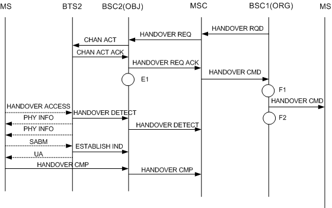

Measurement Counter
H370c:CELLCELL_OUTCELL_HO_REQ
Description
This measurement provides the number of outgoing inter-cell handover requests determined by the BSC according to the handover algorithm. The measurement is performed in the originating cell. If the originating cell (current cell) and the target cell belong to different BSCs, an intra-BSC handover is performed. If they are under the control of one BSC, an inter-BSC handover is performed. This counter indicates the frequency of the handover from the serving cell to the target cell (an external inter-cell handover or an internal inter-cell handover, which is uniquely determined by the originating cell and the target cell). Along with Cell Outgoing Handover Commands and Failed Cell Outgoing Handovers, this counter indicates the performance of inter-cell handovers.
Note:
In the outgoing external inter-cell handover procedure, the originating cell sends a HANDOVER REQUIRED message to the MSC to initiate a handover. The originating cell does not know the target cell before receiving a HANDOVER COMMAND message from the MSC. Therefore, this counter is incremented by one when the originating cell receives the HANDOVER COMMAND message.
Unit
Integer number or integer.
Measurement Point
If the originating cell and the target cell are GSM cells, this counter is measured in the following situations:
1. In the internal inter-cell handover, the target cell is registered as a neighbor cell. After handover algorithm decision, the originating cell (serving cell) sends an Intercell Handover Request message to the target cell and this counter is incremented by one in the originating cell (serving cell) at D1, as shown in the following figure.

2. In the inter-BSC handover procedure, the target cell is registered as a neighbor cell, this counter is incremented by one when the originating cell (serving cell) receives a HANDOVER COMMAND message from the MSC at F1, as shown in the following figure.

Formula
This is an original counter without involving any formula.